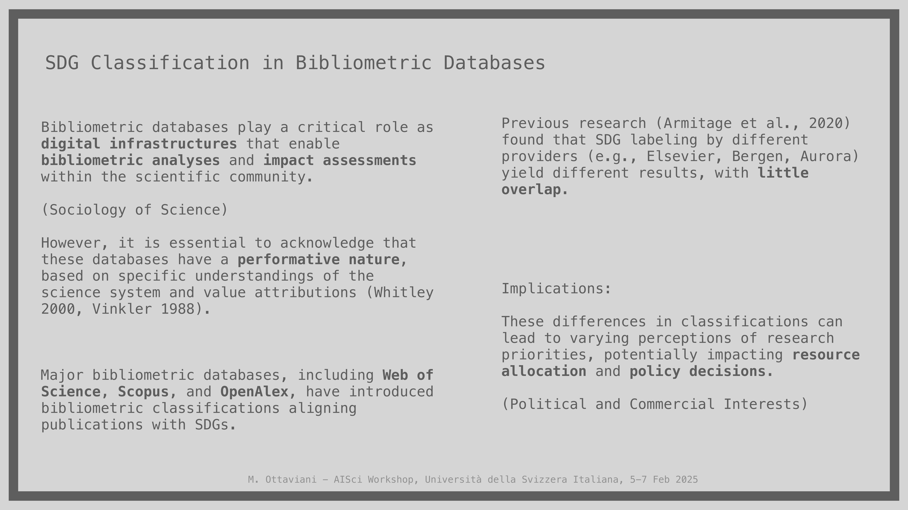
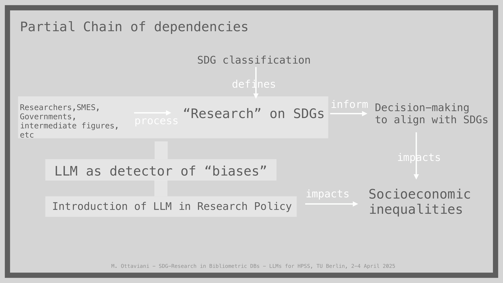
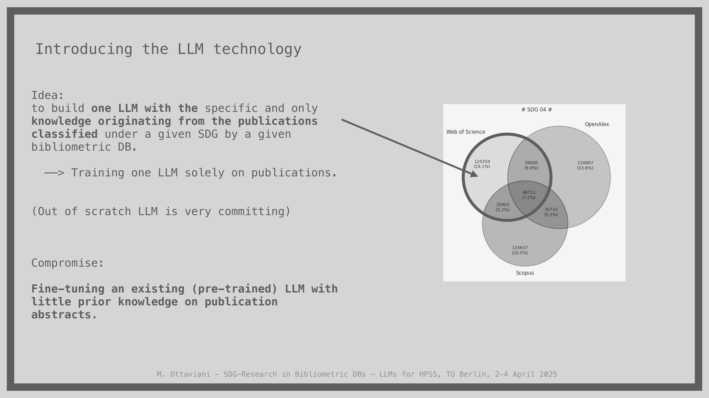
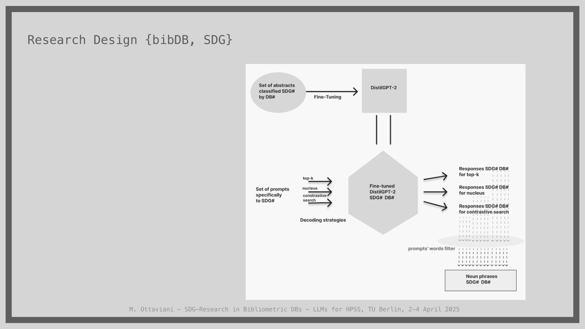
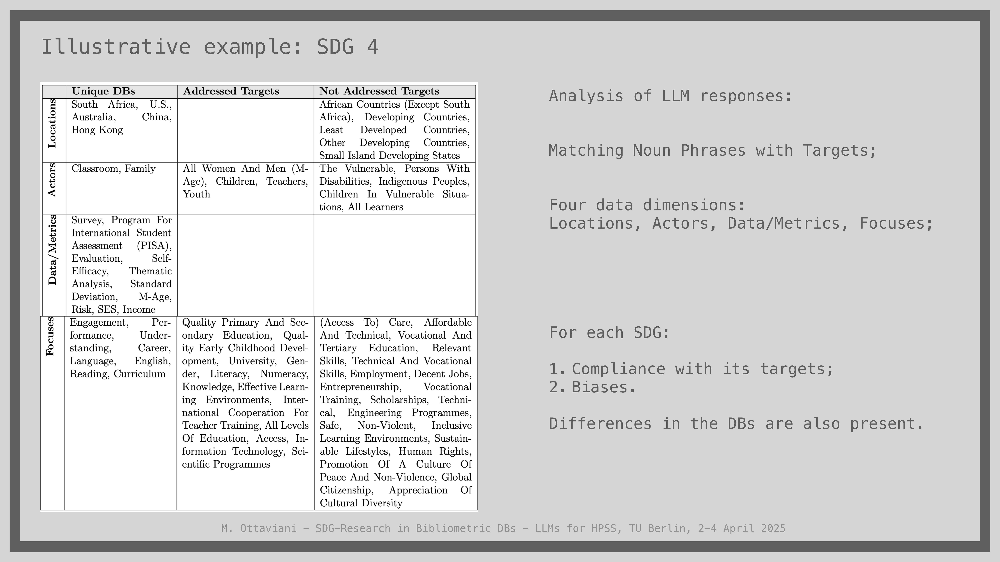
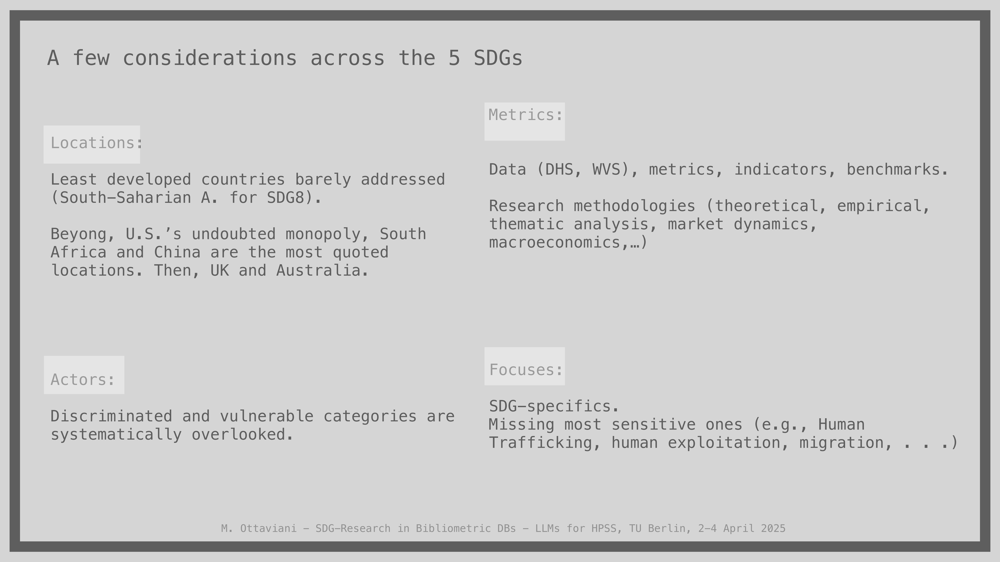
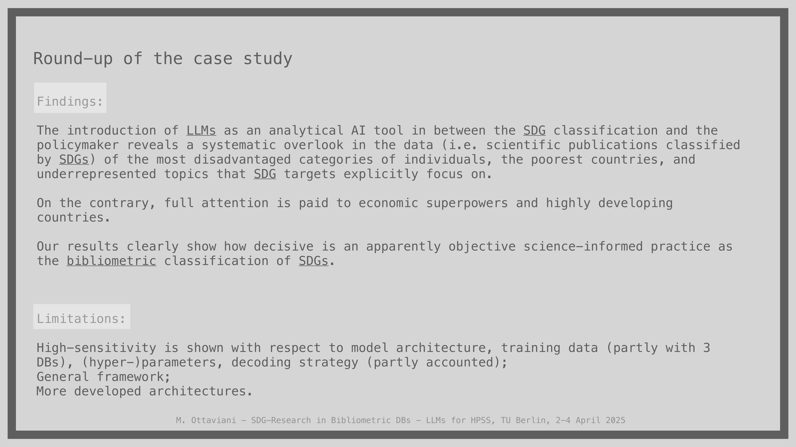

9 The Representation of SDG-Related Research in Bibliometric Databases: A Conceptual Inquiry via LLMs
Overview
In this case study, the authors investigate the representation of the United Nations Sustainable Development Goals (SDGs) within major bibliometric databases. They employ a fine-tuned Large Language Model (LLM) to analyse and unveil systematic biases in how these databases classify scientific publications. The investigation centres on three key databases—Web of Science, Scopus, and OpenAlex—and examines the significant inconsistencies in their SDG labelling methodologies.
To conduct this analysis, the research team developed a specialised workflow, fine-tuning the DistilGPT2 model on a shared corpus of publications to act as an analytical probe. This approach was designed to assess the aggregate effects of classification choices on research policy and perception.
Their findings demonstrate that the resulting body of SDG-classified literature systematically overlooks the most disadvantaged populations, the poorest countries, and sensitive topics explicitly mentioned in SDG targets. Conversely, the literature shows a strong focus on economic superpowers and highly developed nations. The study thus highlights the performative nature of bibliometric classifications and underscores the critical impact of these seemingly objective, science-informed practices.
9.1 The Performative Nature of Bibliometrics

Bibliometric databases occupy a critical position within the sociology of science, exerting considerable influence over the entire academic ecosystem. Their classification systems and metrics actively shape the behaviour of researchers, academics, funding bodies, and policymakers.
This influence, however, is not neutral. The databases themselves respond to various political and commercial interests, which imbues them with a performative nature. Rather than passively reflecting scientific activity, they actively construct and influence it.
9.2 Rationale and Dependency Chain

This case study centres on three principal bibliometric databases: Web of Science, Scopus, and OpenAlex. The authors build upon previous research that had already revealed a minimal overlap amongst publications labelled with SDGs, a discrepancy attributed to how each service drafts its search queries.
Their investigation examines the chain of dependencies that links the processing of metadata at the database level to its eventual impact on end-users such as researchers, consultants, and policymakers. Consequently, the authors’ primary objective was to deploy an LLM as an analytical tool. This model serves to conduct a generalised exercise, assessing the aggregate effects of these classification systems on research policy.
9.3 Initial Publication Overlap

To establish a comparative baseline, the authors performed a classification analysis on a shared corpus of publications jointly indexed across Web of Science, Scopus, and OpenAlex. The initial results were entirely consistent with the findings of Armitage (2020), revealing a remarkably small overlap in publications that the different databases classified under the same SDG.
For instance, a publication indexed in Scopus may not be tagged as relevant to SDG 5 (Gender Equality) by that platform, even whilst other databases classify it as such. Furthermore, the analysis uncovered classification anomalies. Web of Science, for example, categorises a substantial portion—around 10%—of publications under SDG 5 that originate from the field of mathematics, including topics like geometrical differential equations.
9.4 LLM Selection and Fine-Tuning

The authors developed a specific strategy for leveraging LLM technology. Their initial concept involved training a bespoke LLM exclusively on the corpus of publications classified under a given SDG by a specific database. Recognising the prohibitive resource intensity of this approach, the team adopted a practical compromise: fine-tuning an existing, open-source model.
For this purpose, the team selected DistilGPT2. Its basic architecture, limited parameters, and minimal pre-existing knowledge made it an ideal candidate, ensuring it held no significant prior understanding of the publication or prompt semantics. This quality contrasts sharply with larger commercial or open-source models. The fine-tuning process was designed for similarity; the model was trained using only publication titles and abstracts, where a new title serves as a prompt to generate a new abstract.
9.5 Prompt Generation and Analysis

The authors’ research design incorporated a systematic method for generating prompts to benchmark the LLM’s performance. Recognising that each SDG comprises between eight and twelve distinct targets, the team crafted ten diverse prompts for every single target. This process yielded a specific set of 80 to 120 prompts for each SDG, designed to probe different facets of the goals.
The fine-tuned DistilGPT-2 model then generated responses to these prompts based on the publication sets from each bibliometric database. To ensure a robust analysis, the team employed three distinct decoding strategies for text generation: top-k, nucleus, and contrastive search. Subsequently, they applied a word filter to the generated text to extract key noun phrases for the final discussion of the results.
9.6 Analysis of SDG 4: Quality Education

An illustrative analysis of SDG 4 (Quality Education) reveals the system’s inherent biases. The investigation, structured across four dimensions—Locations, Actors, Data/Metrics, and Focuses—shows a clear pattern of inclusion and exclusion. The generated content frequently addresses locations such as South Africa, the U.S., Australia, and China, and actors like teachers, youth, and students in classrooms. It also references specific metrics including PISA, socioeconomic status (SES), and thematic analysis, with focuses on curriculum, performance, and English language.
Conversely, the LLM’s output systematically fails to address most other African nations, developing countries, and small island states. Critically, it overlooks vulnerable actors explicitly named in SDG targets, such as persons with disabilities, indigenous peoples, and children in vulnerable situations. Key educational focuses like vocational training, scholarships, and the promotion of a culture of peace and global citizenship are also conspicuously absent.
9.7 Systematic Omissions Across SDGs

Generalising their findings across the five SDGs studied, the authors reveal consistent and systematic omissions in the scientific literature as classified by the databases. A pronounced geographic bias exists; least developed countries receive scant attention, whilst the United States commands a near-monopoly of focus, followed by China, South Africa, the UK, and Australia.
Furthermore, discriminated and vulnerable populations are systematically overlooked, a failing that persists across all analysed goals. The highlighted research methodologies tend to be general, such as thematic analysis or macroeconomic modelling. Most critically, the analysis shows that the most sensitive and challenging topics central to the SDGs—including human trafficking, exploitation, and migration—are largely absent from the discourse.
9.8 Findings and Limitations

The authors’ central finding is that using an LLM as an intermediate analytical tool starkly reveals systematic oversights within the body of scientific publications classified under the SDGs. This curated literature consistently neglects the most disadvantaged individuals, the poorest nations, and specific underrepresented topics that the SDG targets explicitly prioritise. In stark contrast, the research corpus pays full attention to economic superpowers and highly developed countries.
These results clearly demonstrate the decisive, shaping power of a supposedly objective practice like bibliometric classification. Nevertheless, the authors acknowledge certain limitations. Their methodology exhibits high sensitivity to the LLM’s architecture, its training data, the chosen hyperparameters, and the decoding strategy, though these factors were partly accounted for in the experimental design.